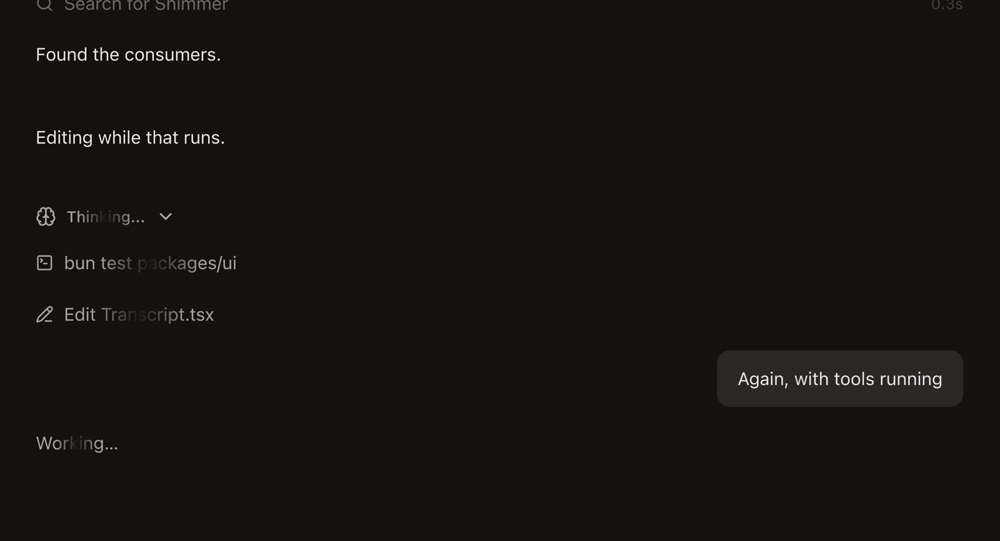
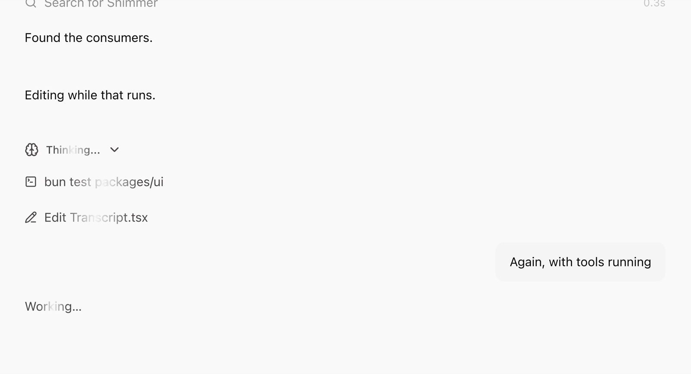
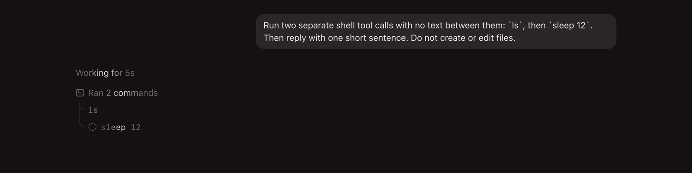
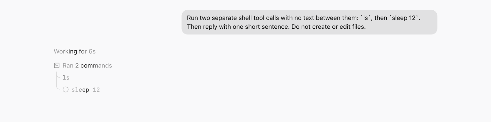
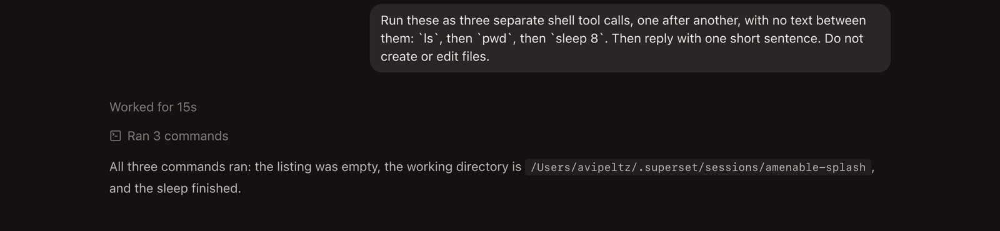
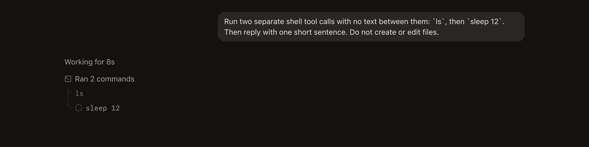
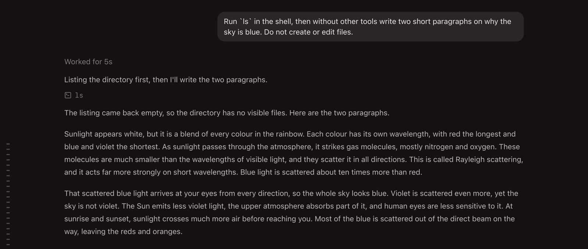
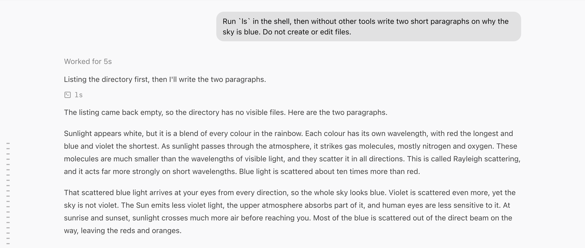
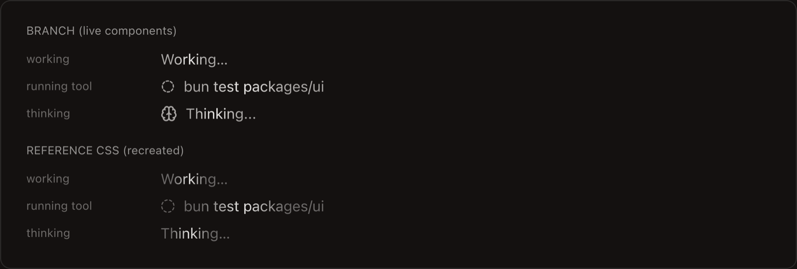
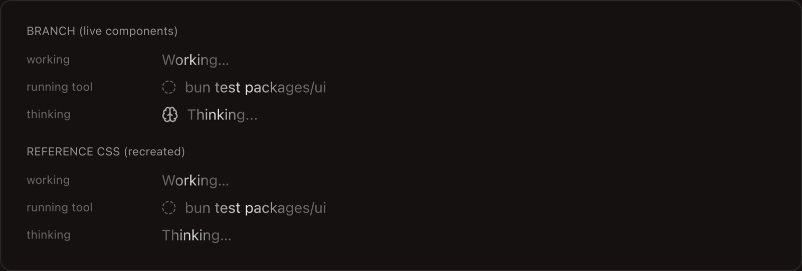

Chat streaming and motion
The ACP chat now streams replies smoothly and follows the reference transcript's layout: one live clock line under the prompt, one-line reasoning and tool rows, and runs of steps on a rail. It started as the shimmer fix (PR 1 of the chat polish series) and grew when the live chat still felt off next to the reference.
Before and after
A running turn with a reasoning row, two running tool calls and the working line. The sweep is frozen mid-label in every capture. The before shots come from the base commit with a scripted agent; the after shots are real agent turns.








What changed
The loader
- The band is now the foreground colour over a base of the foreground at 40%, so the sweep reads as a highlight. A first pass kept the grey
muted-foregroundbase, and in dark the band was barely visible over it. - The sweep is a CSS keyframe behind an
animate-shimmertoken inpackages/ui/src/motion.css, instead of a per-framemotion/reactanimation. The desktop renderer imports that file because it doesn't load thepackages/uitheme sheet. - The repeat value used
padding-box, which isn't a repeat keyword, so both layers tiled. It'sno-repeatnow. - Reduced motion renders plain muted text with no animation. The public API and the 2 s default are unchanged.
- Tempo follows the reference: the clock sweeps at 1 s, while thinking, running titles and run summaries sweep at 1.6 s.


Streaming
- Replies used to arrive in bursts: nothing for 0.3 to 0.5 s, then up to 145 characters at once. Text now appears a whole word at a time at a steady pace, never below 90 characters a second, and closes on a backlog in about a quarter second.
- Each new paragraph fades in over 320 ms. The reference fades each word; why we don't is under the performance finding below.
- The streaming paragraph is keyed like the block it becomes, so a finished paragraph keeps its DOM.
- Empty blocks between paragraphs used to add a second gap. They are hidden now, so paragraphs sit 16 px apart.
One live line per turn
- The clock moved from above the prompt to directly under it. It sweeps while the turn runs and stays as "Worked for 8s" at half strength.
- The separate "Working…" line at the bottom is gone. In one measured turn it mounted, unmounted after 95 ms and mounted again later, restarting its sweep each time.
Layout
- The column is 56rem with 16 px row gutters and a 4 px row rhythm. Prose is 14 px on a 24 px line at 78% strength and sits closer under work than under the prompt.
- The prompt bubble is a 10% foreground fill: a pill when it fits one line, 12 px corners otherwise, up to 36rem wide.
- Copy, branch and time show under a turn's last reply once it has settled. Before, every reply reserved an invisible row for them, which left about 30 px of dead space under each one.
Rows
- Reasoning is one line: "Thinking..." sweeping until the thought has words, then its first paragraph at half strength, pulsing while it streams. Click to read the whole thought.
- A tool call is one line with no output preview and no "Show detail" link. Commands are 13 px mono, files are a small mono chip. A running call turns a dashed ring and sweeps its title; a settled one sits at half strength. Click the line to see what the call produced.
- A run of two or more calls sits under a summary line, with the steps on a rail that branches to each row. The summary sweeps while a step runs.
- The shared timeline in
packages/chatkept a running call out of its run until it settled, so a live step showed as a separate line and jumped into the run when it finished. It now joins as soon as it starts.
No user-facing strings were added. Four strings left with the old rows and are removed from every catalog: "Working…", "Show detail", "Hide detail" and "+N more lines".
Your questions
- Why did the sleep tool call have a detail dropdown under it?
- Our row printed a preview under the title. For
sleep 8that was the agent's own description of the command, "Pause for eight seconds", not output. It also added "Show detail" whenever the call had content behind it. The reference has neither, so both are gone and the row itself is the disclosure. - When is the rail from the comparison page used?
- In the reference, two or more work steps in a row between pieces of prose form a group: a summary line with the steps on a rail. It stays open while live and folds once the agent writes prose. A single call renders as one plain line with no header. Ours follows the same rule, except that our runs fold when the turn ends rather than when prose arrives.
- Is the dashed ring real?
- The component exists in the reference source, but it never renders: the rows that would show it always opt out of the icon, so a running tool there is static. The page's recreation draws it. We kept ours because the original spec asked for it.
- And "Preparing a handoff" with the Braille spinner?
- That only appears when handing a conversation to another agent. Nothing in our chat needs it.
Performance finding, not fixed here
Inserting any element in the desktop renderer triggers a style recalculation that can cover the whole document: about 6,500 elements and roughly 40 ms per insertion. Growing an existing text node does not. I traced it with invalidation tracking, reproduced it in-page by appending one span per frame into the transcript, and bisected the stylesheet by deleting rules.
| Rules present | Insertions in 3 s | Style work | Whole-document recalcs |
|---|---|---|---|
| All rules | 69 | 2,764 ms | 70 |
Without the 14 group-has-* variants | 286 | 2,456 ms | 0 |
Without any :has() rule | 357 | 36 ms | 0 |
| All rules, text-node growth only | 361 | 170 ms | 4 |
- The
group-has-*variants put:has()on an ancestor of the styled element. Removing any one subset of the 14 was not enough; only removing all of them stopped the whole-document recalcs. - The remaining element-level
has-*rules still cost about 4 to 10 ms per insertion. - The
body:has(…) .dragoverlay rule from #7932 contributes too, but deleting it alone only cut whole-document recalcs from 45 to 35 during a real reply. - This is why the fade is per paragraph. Per-word spans insert elements every frame and capped the reveal near 20 fps: a median of 58 ms between updates and jumps of up to 436 characters.
The fix is an app-wide audit of :has() usage, which belongs in its own PR. It would also speed up anything else that adds DOM nodes per frame.
Verification
- The
packages/ui,packages/chatand desktopChatSessiontests pass. - The full desktop suite has 209 failures. The same 209 fail on the base commit in this checkout, and none are in the chat.
- The
packages/uiandpackages/chat-uitypechecks pass.packages/chatand the desktop app show no errors in changed files. Their remaining errors are a path-casing artifact of this worktree and a duplicate@better-auth/coreinstall, both present on the base commit. Only the final tree was typechecked, not each commit. bun run check:i18nfails on main because of an unrelatedgreetingid inapps/marketing/src/app/providers.test.tsx. The catalogs here equal the extractor's output minus that entry.- Driven live over CDP in an ACP chat with a real agent, in both themes. Computed styles: the clock sweeps at 1 s, the summary and running title at 1.6 s, and the ring at
spin-slow 3.6s linear infinite. With reduced motion emulated, all of them compute toanimation: none.
Not done yet
- The model name on the clock line ("Claude Opus 5.5 working for 12s") needs new strings and translations in 17 locales.
- The run summary says "Ran 2 commands" while a step is still running, where the reference switches to the present tense.
- The reference's step-arrival choreography isn't ported: steps sliding onto the rail, the rail growing, the branch drawing in.
- Runs fold when the turn ends rather than as soon as the agent writes prose.
- Per-word fading should wait for the
:has()audit.
Commits
| Commit | What |
|---|---|
d1f1844b41 | Text shimmer sweeps a foreground highlight, in CSS |
5bef044a1a | Busy labels share one tempo and one weight |
8cdc3c11ff | A running tool call shows a slowly turning dashed ring |
37b28aed65 | Shimmer base at 40% foreground so the sweep shows in dark |
ce3fd31d30 | Running ring uses the CircleDashed glyph, dimmed |
e50e6bb157 | Replies stream a word at a time and fade in by block |
5d47e4d31c | One live clock line under the prompt, and the transcript's measure |
35df536ad5 | One-line reasoning and tool rows, runs of steps on a rail |
0ce80d2a84 | A running tool call joins the run it continues |